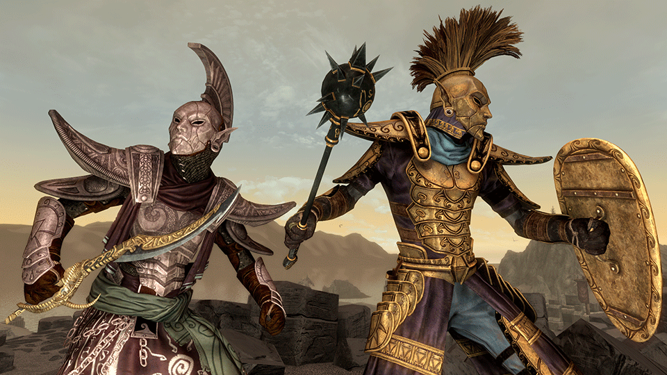

11 ноября Skyrim отпразднует десятилетие. К юбилею Bethesda подготовила специальное издание игры – Skyrim Anniversary Edition. Оно будет доступно на текущем и предыдущем поколениях Xbox и PlayStation, а также на ПК.В Anniversary Edition войдут дополнения Dawnguard, Dragonborn и Hearthfire, около 500 модов из моддерской площадки Bethesda Creation Club, среди которых задания, локации, новые броня и оружие. Владельцы Special Edition получат рыбалку, режим выживания и новую цепочку заданий «Святые и Соблазнители», вдохновленную DLC «Дрожащие острова» из TES IV: Oblivion – все это тоже прямиком из Creation Club. Для владельцев Xbox Series X|S и PS5 обновление Special Edition будет бесплатным. А за обновление (на любой платформе) со Special до Anniversary придется доплатить – пока неизвестно, сколько именно.
 Подробная информация Главная страница